Direitos de imagem
Créditos das imagens
As fotos pessoais, de projetos, de trabalhos e dos certificados são minhas ou dos meus grupos. As imagens ilustrativas abaixo vieram do Wikimedia Commons e têm licença livre: domínio público, CC0 ou Creative Commons (CC BY e CC BY-SA), que permitem o uso desde que o autor seja citado.
| Imagem | Arquivo | Fonte | Autor | Licença |
|---|---|---|---|---|
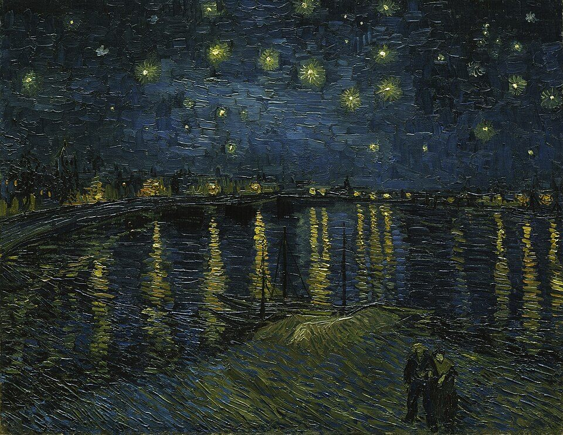 | imagens/areas/artes.jpg | Vincent van Gogh - Starry Night - Google Art Project.jpg | Vincent van Gogh | Public domain |
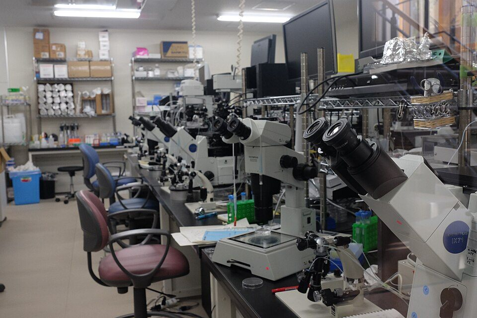 | imagens/areas/biologia.jpg | Biology laboratory - Japan - May 2015.jpg | Jun Seita from Palo Alto, CA, U.S. | CC BY 2.0 |
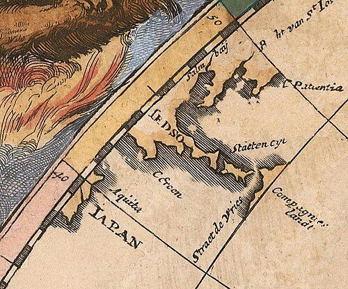 | imagens/areas/ciencias-humanas.jpg | 17th century world map - Nova Totius Terrarum Orbis Tabula (Aquita).jpg | Frederik de Wit | Public domain |
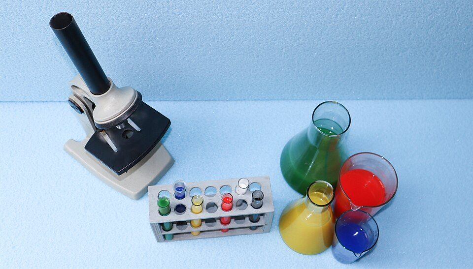 | imagens/areas/ciencias-natureza.jpg | Laboratory equipment of modern chemistry classroom.jpg | Belikov Maxim | CC BY 4.0 |
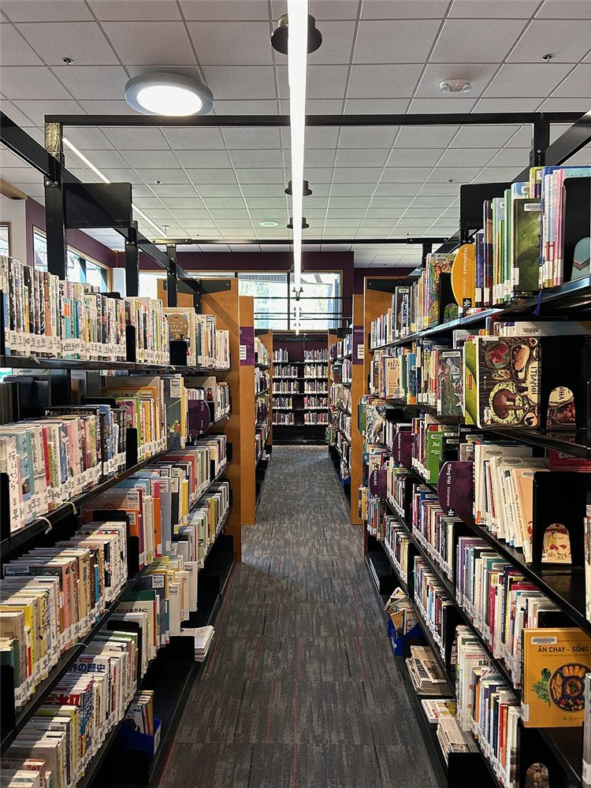 | imagens/areas/estudos-livros.jpg | International books at Kent Library.jpg | Roc0ast3r | CC0 |
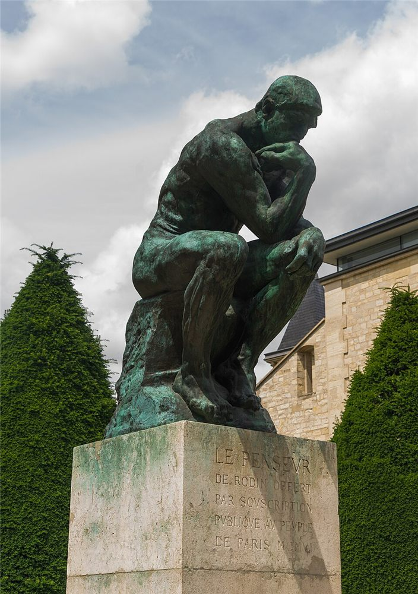 | imagens/areas/filosofia.jpg | Le Penseur Musée Rodin Paris S.1295.jpg | Auguste Rodin | CC0 |
 | imagens/areas/fisica.jpg | Geiger counter 2.jpg | TimVickers | Public domain |
 | imagens/areas/geografia.jpg | The Blue Marble, AS17-148-22727.jpg | Harrison Schmitt / Apollo 17 | Public domain |
 | imagens/areas/historia.jpg | Big four.jpg | Edward N. Jackson (US Army Signal Corps) | Public domain |
 | imagens/areas/ingles.jpg | Dictionary indents headon.jpg | Till Niermann | CC BY-SA 3.0 |
 | imagens/areas/linguagens.jpg | Books on library shelves, Davison Building, Royal Holloway University of London, Surrey - September 2026 - 05.jpg | Mertbiol | CC0 |
 | imagens/areas/literatura.jpg | Machado de Assis 1904.jpg | Autor desconhecido | Public domain |
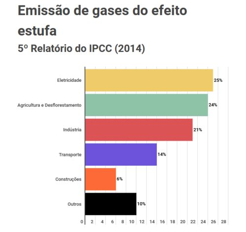 | imagens/areas/matematica-estatistica.jpg | Ipcc 2014 bar graph.png | Tetizeraz | CC0 |
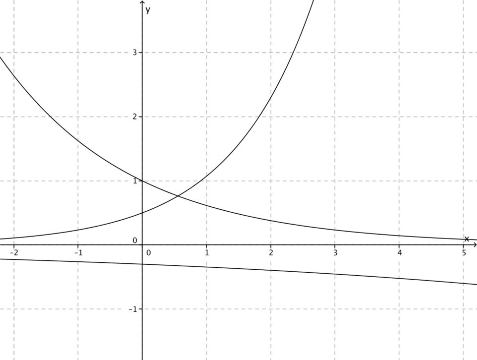 | imagens/areas/matematica-funcoes.jpg | Exponential functions.png | Itangalo | CC0 |
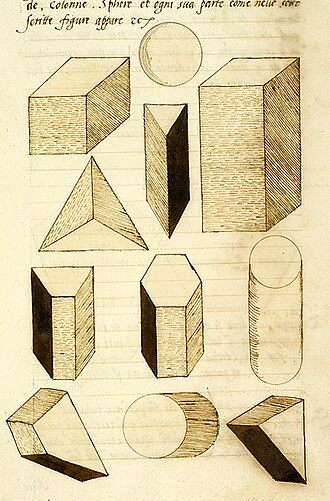 | imagens/areas/matematica-geometria.jpg | Geometric solids 16th century.jpg | Zuanne Fantello | Public domain |
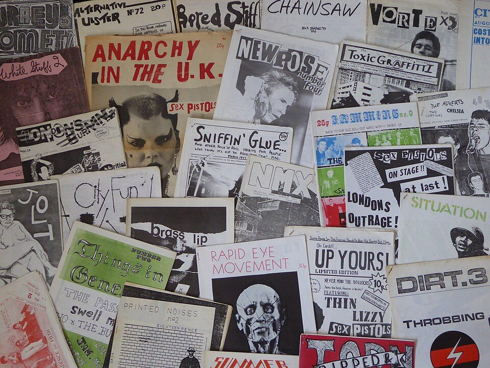 | imagens/areas/portugues.jpg | 1970s fanzines (21224199545).jpg | Jake from Manchester, UK | CC BY 2.0 |
 | imagens/areas/quimica.jpg | Erlenmeyercolored2.jpg | RyanSanders | CC BY 4.0 |
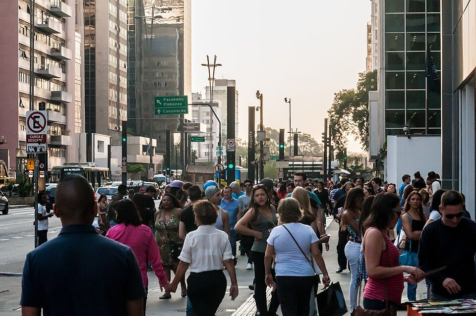 | imagens/areas/sociologia.jpg | Avenida Paulista street.jpg | Wilfredor | CC0 |
 | imagens/tecnica/esp32.jpg | Espressif ESP-WROOM-32 Wi-Fi & Bluetooth Module.jpg | Brian Krent | CC BY-SA 4.0 |
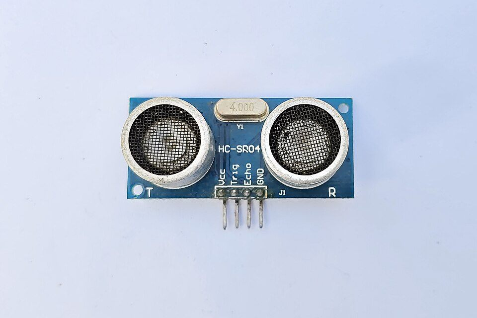 | imagens/tecnica/sensor-ultrassonico.jpg | HC SR04 Ultrasonic Module.jpg | Suyash Dwivedi | CC BY-SA 4.0 |
 | imagens/tecnica/usinagem-cnc.jpg | Double side horizontal cnc milling machine loading 3.jpg | Zjw0558 | CC BY-SA 4.0 |


.jpg){kind=link}


.jpg){kind=link}